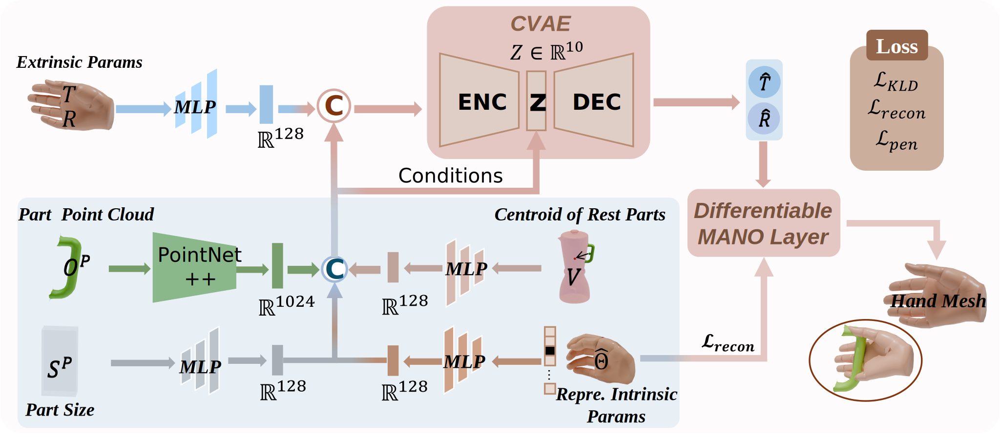
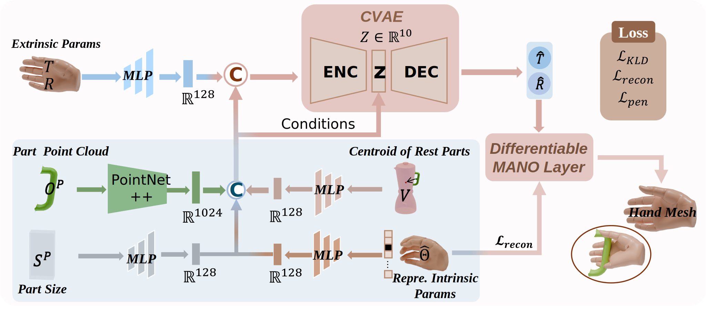
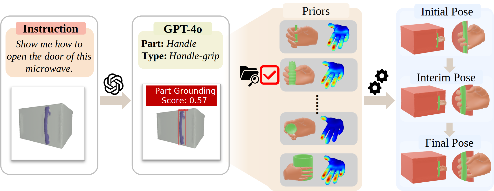

Network of Part-aware Grasping Generation
The second stage aims to estimate the rough hand extrinsics parameters based on the given object and the inferred grasping arrangement.
Recent advances in dexterous grasping synthesis have demonstrated significant progress in producing reasonable and plausible grasps for many task purposes. But it remains challenging to generalize to unseen object categories and diverse task instructions.
In this paper, we propose G-DexGrasp, a retrieval-augmented generation approach that can produce high-quality dexterous hand configurations for unseen object categories and language-based task instructions. Specifically, the fine-grained contact part and affordance act as generalizable guidance to infer reasonable grasping configurations for unseen objects with a generative model, while the relevant grasping distribution plays as regularization to guarantee the plausibility of synthesized grasps during the subsequent refinement optimization.
Our comparison experiments validate the effectiveness of our key designs for generalization and demonstrate the remarkable performance against the existing approaches.

The three-stage pipeline of G-DexGrasp. (1) Generalizable grasping prior retrieval leverages pre-trained models to infer the fine-grained grasp configuration and retrieve relevant instances to form the grasping prior. (2) Part-aware grasping generation takes the target contact part and the retrieved prior as conditions to roughly initialize the hand. (3) Prior-guided grasping optimization takes the retrieved prior and other constraints as objective loss. It first optimizes the extrinsics only and then both extrinsic and intrinsic parameters.
The second stage aims to estimate the rough hand extrinsics parameters based on the given object and the inferred grasping arrangement.
To better show how G-DexGrasp worked, we take the results of a microwave as an example.
Given object from unseen categories and language-based task instruction, thanking to our retrieval-augmented grasping generation strategy, our approach exhibits remarkable performance in the generalization. Note that the contact parts are highlighted in the first row for visualization, not as input.

Compared to our results, (b) and (c) validate the importance of using a part-aware network for hand initialization, while (d), (e), and (f) reveal the effectiveness of the prior-guided optimization to produce stable grasps.

@misc{jian2025gdexgraspgeneralizabledexterousgrasping,
title={G-DexGrasp: Generalizable Dexterous Grasping Synthesis Via Part-Aware Prior Retrieval and Prior-Assisted Generation},
author={Juntao Jian and Xiuping Liu and Zixuan Chen and Manyi Li and Jian Liu and Ruizhen Hu},
year={2025},
eprint={2503.19457},
archivePrefix={arXiv},
primaryClass={cs.CV},
url={https://arxiv.org/abs/2503.19457},
}